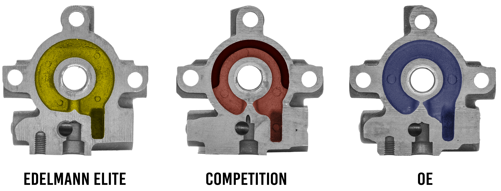

Skip the Stress!
Choose a new pump with the pulley pre-installed and forget all that hassle. In many cases, Edelmann Elite are the only new pumps offered with the pulley pre-installed.

In many instances in our pump program, we have included either the pulley, reservoir, or pipe, and in some cases, a combination of the three. These are included to simplify the installation process by removing the need for specialized tools and reducing the chance of error or damage to components.
Choose a component to see more about how that feature improves the repair process:
When replacing a power steering pump, there are a number of things that could go wrong if the pulley still needs to be installed. In cases where the pulley is not pre-installed, the installer will have to rely on the previously installed pump for accuracy when installing the new pump...and how do they know if the old pump is correct after years of use?
To ensure that the pulley depth is correct, the installer needs to measure the location of the pulley on the old pump to ensure the correct placement on the new pulley. What if this measurement is wrong?
While installing the new pulley or putting the old pulley on a new pump, a power steering pulley tool is required. This tool is to ensure that pulley is completely straight before pressure is applied to install the pulley.
Some applications require the pump to be installed on the engine before the pulley can be mounted. This requires using the pulley tool in awkward, tight spaces.

Choose a new pump with the pulley pre-installed and forget all that hassle. In many cases, Edelmann Elite are the only new pumps offered with the pulley pre-installed.

Reservoirs present issues similar to pipes by the manner in which they necessitate removing and reinstalling seals that don’t need to be touched when using a new pump with the reservoir pre-installed.
Some pumps have a reservoir that have very tight tolerances for the way the pump is housed within the reservoir mold. Any damage to the precise shape while removing the old reservoir from the pump being replaced could create an improper seat for the new pump to fit into. At this point, the installer is faced with the dilemma of trying to reshape the previous reservoir or buying a new reservoir.
As was the case with pipes, when re-using an old reservoir, the O-Rings will need to either be replaced or re-used during installation. This presents another opportunity for improper installation of the O-Ring such as unseen damage and leaks that would require attention after installation of the replacement pump.
When using a new pump with the reservoir pre-installed, there is no need to remove and re-use old, potentially misshapen reservoirs. Save time and energy using a pump where the work is already done and tested.
When installing a replacement pump without the pipe pre-installed, the pump requires the pipe to be removed from the old part and installed in the replacement. During this process a couple of things can happen regarding the fitment of the O-Ring.
While removing the pipe from the old pump, there is potential to damage the O-Ring. In some cases, this damage may not be visible to the naked eye. However, this small damage can cause a failure quickly upon start up of the vehicle as fluid flows through the pipe. This can lead to an immediate fluid leak that wasn’t part of the original repair and now requires replacement.
Additionally, when installing the O-Ring on a new pipe, there is an opportunity for damage or mis-alignment. Same as the previous, this damage may be unrecognizable and could cause leaks as early as the first start up after repair.

Use a new replacement pump with the pipe pre-installed and avoid any unnecessary repairs that could be cause by changing the pipe.
